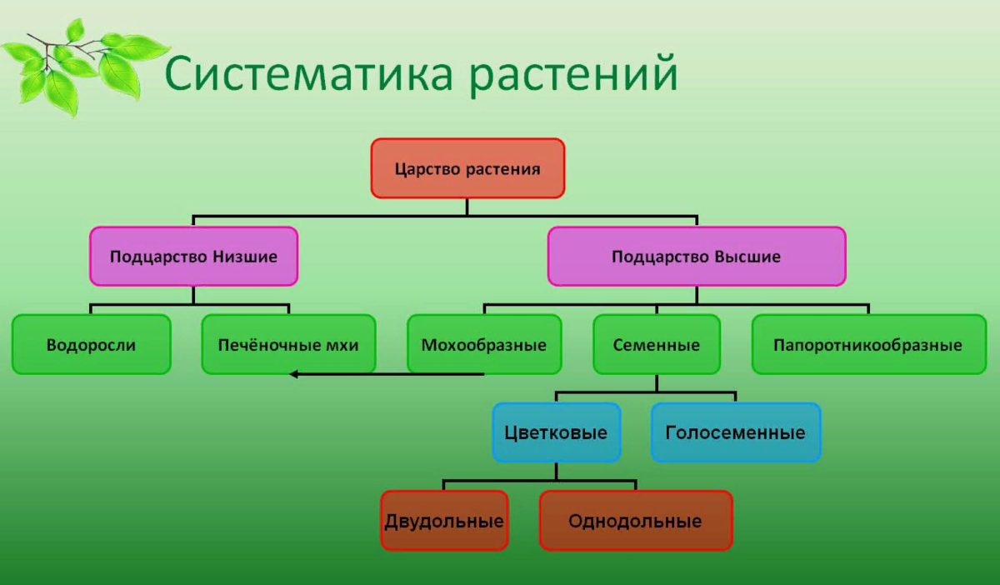
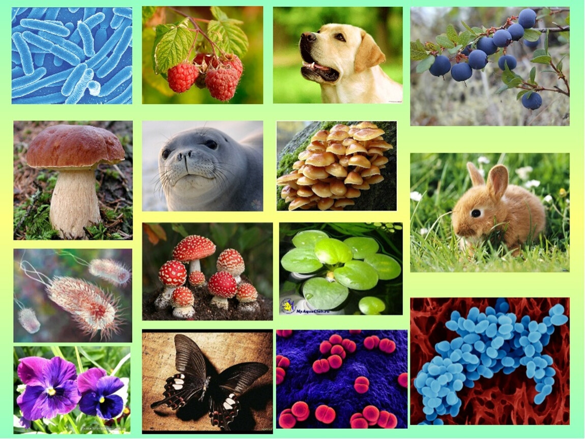
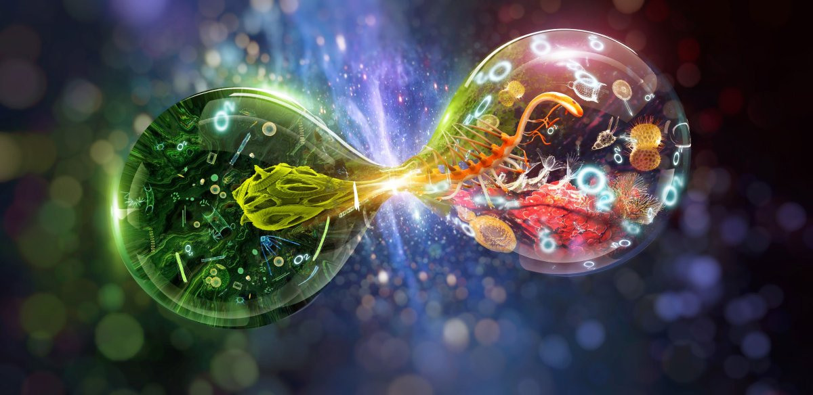
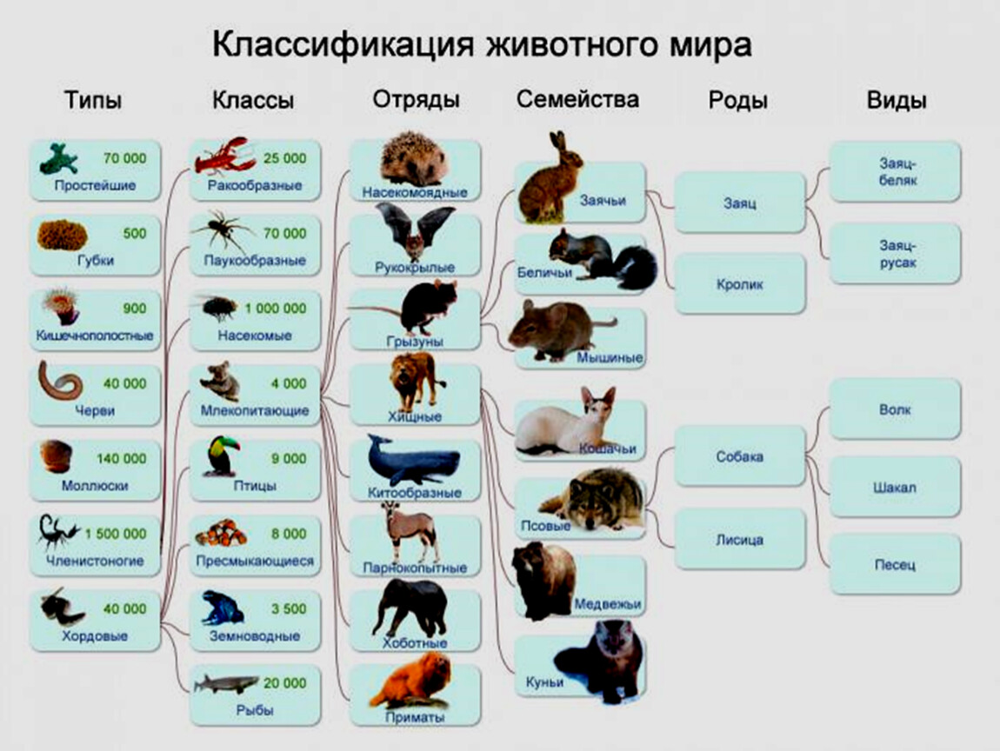
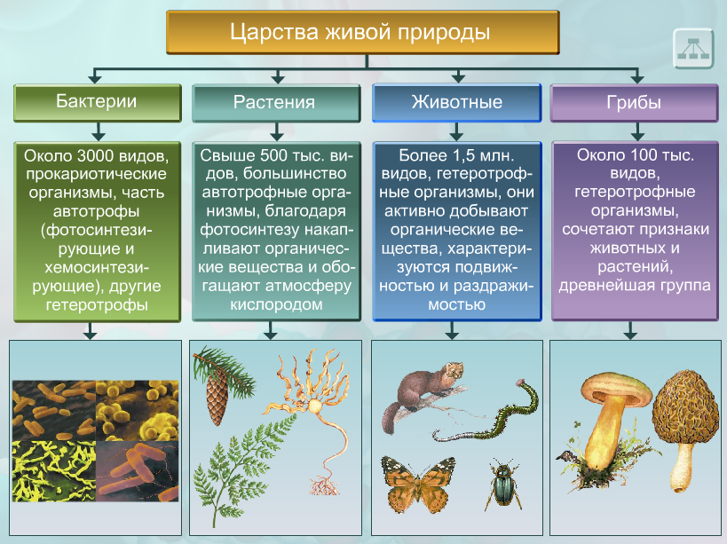
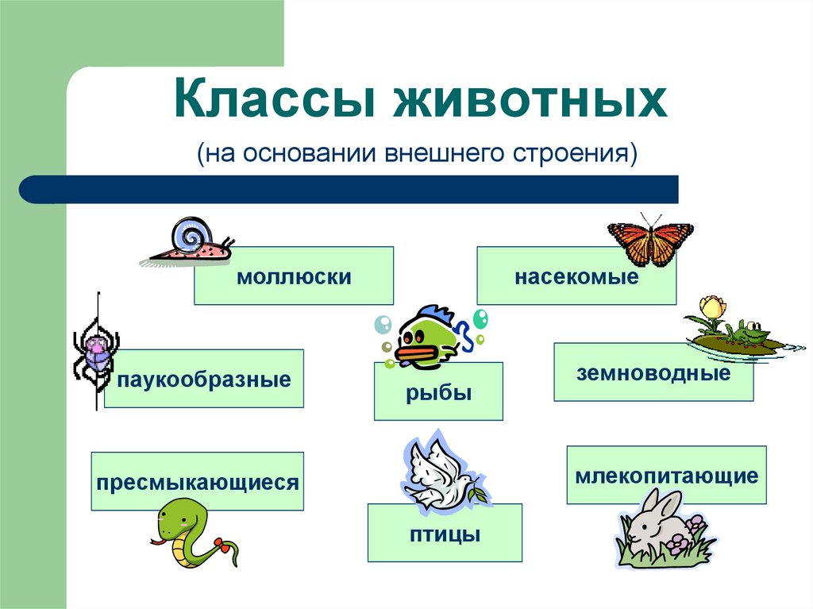

Биологические Науки:
Большинство биологических наук являются дисциплинами с более узкой специализацией. Традиционно они группируются по типам исследуемых организмов:- ботаника изучает растения, водоросли и грибоподобные организмы,
- зоология — животных и протистов,
- микробиология — микроорганизмы и вирусы,
- микология — грибы (ранее являлась разделом ботаники).
- биохимия изучает химические основы жизни,
- биофизика изучает физические основы жизни,
- молекулярная биология — сложные взаимодействия между биологическими молекулами,
- клеточная биология и цитология — основные строительные блоки многоклеточных организмов, клетки,
- гистология и анатомия — строение тканей и организма из отдельных органов и тканей,
- физиология — физические и химические функции органов и тканей,
- этология — поведение живых существ,
- экология — взаимозависимость различных организмов и их среды,
- генетика — закономерности наследственности и изменчивости,
- биология развития — развитие организма в онтогенезе,
- палеобиология и эволюционная биология — зарождение и историческое развитие живой природы.
История Биологии:
Хотя концепция биологии как особой естественной науки возникла в XIX веке, биологические дисциплины зародились ранее в медицине и естественной истории. Обычно их традицию ведут от таких античных учёных, как Аристотель и Гален через арабских медиков аль-Джахиза, ибн-Сину, ибн-Зухра и ибн-аль-Нафиза. В эпоху Возрождения биологическая мысль в Европе была революционизирована благодаря изобретению книгопечатания и распространению печатных трудов, интересу к экспериментальным исследованиям и открытию множества новых видов животных и растений в эпоху Великих географических открытий. В это время работали выдающиеся умы Андрей Везалий и Уильям Гарвей, которые заложили основы современной анатомии и физиологии. Несколько позже Линней и Бюффон совершили огромную работу по классификации форм живых и ископаемых существ. Микроскопия открыла для наблюдения ранее неведомый мир микроорганизмов, заложив основу для развития клеточной теории. Развитие естествознания, отчасти благодаря появлению механистической философии, способствовало развитию естественной истории. К началу XIX века некоторые современные биологические дисциплины, такие как ботаника и зоология, достигли профессионального уровня. Лавуазье и другие химики и физики начали сближение представлений о живой и неживой природе. Натуралисты, такие как Александр Гумбольдт, исследовали взаимодействие организмов с окружающей средой и его зависимость от географии, закладывая основы биогеографии, экологии и этологии. В XIX веке развитие учения об эволюции постепенно привело к пониманию роли вымирания и изменчивости видов, а клеточная теория показала в новом свете основы строения живого вещества. В сочетании с данными эмбриологии и палеонтологии эти достижения позволили Чарльзу Дарвину создать целостную теорию эволюции, в основе которой лежит естественный отбор. К концу XIX века идеи самозарождения окончательно уступили место теории инфекционного агента как возбудителя заболеваний. Но механизм наследования родительских признаков всё ещё оставался тайной. В начале XX века Томас Морган и его ученики заново открыли законы, исследованные ещё в середине XIX века Грегором Менделем, после чего начала быстро развиваться генетика. К 1930-м годам сочетание популяционной генетики и теории естественного отбора породило современную эволюционную теорию или неодарвинизм. Благодаря развитию биохимии были открыты ферменты и началась грандиозная работа по описанию всех процессов метаболизма. Раскрытие структуры ДНК Уотсоном и Криком дало мощный толчок для развития молекулярной биологии. За ним последовало постулирование центральной догмы, расшифровка генетического кода, а к концу XX века — и полная расшифровка генетического кода человека и ещё нескольких организмов, наиболее важных для медицины и сельского хозяйства. Благодаря этому появились новые дисциплины геномика и протеомика. Хотя увеличение количества дисциплин и чрезвычайная сложность предмета биологии породили и продолжают порождать среди биологов всё более узкую специализацию, биология продолжает оставаться единой наукой, и данные каждой из биологических дисциплин, в особенности геномики, применимы во всех остальных.
Фото Материал:
     